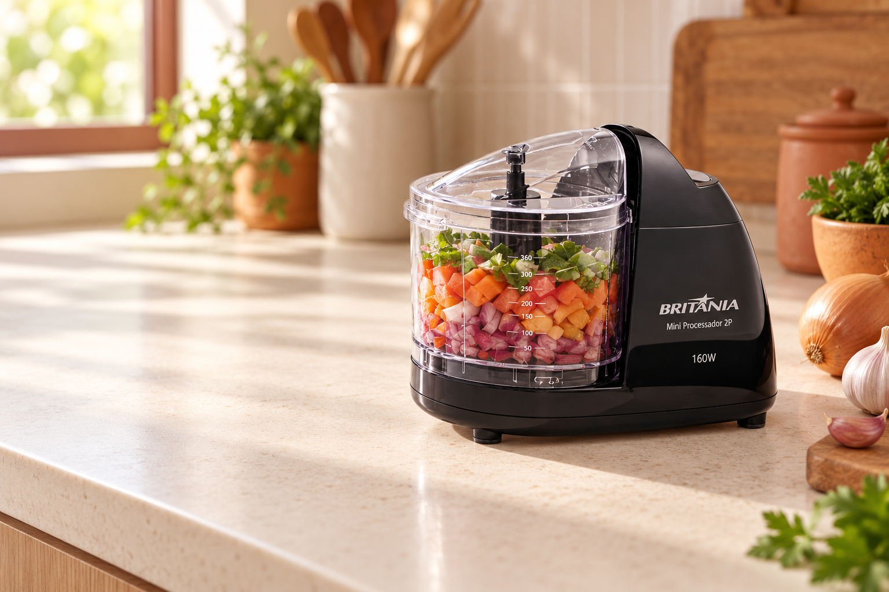
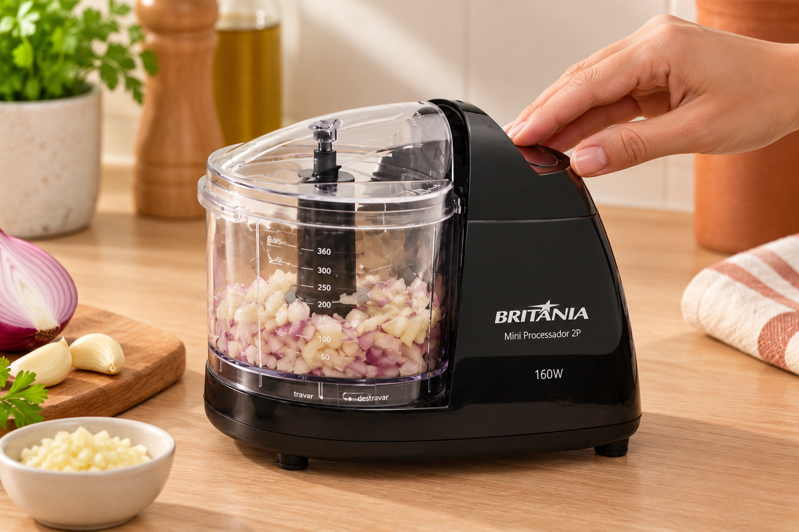
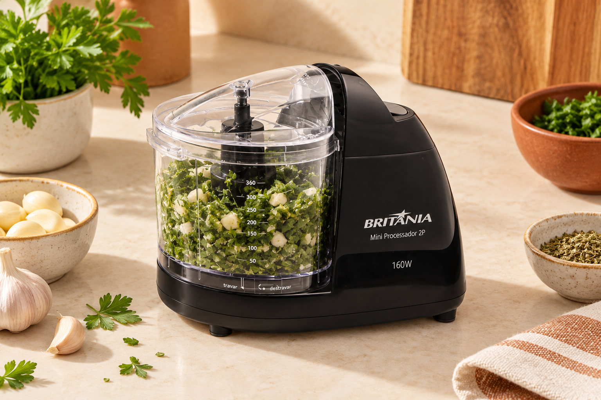
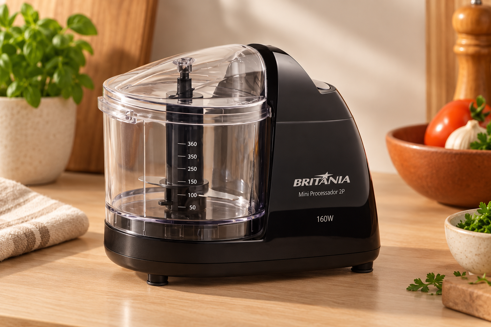
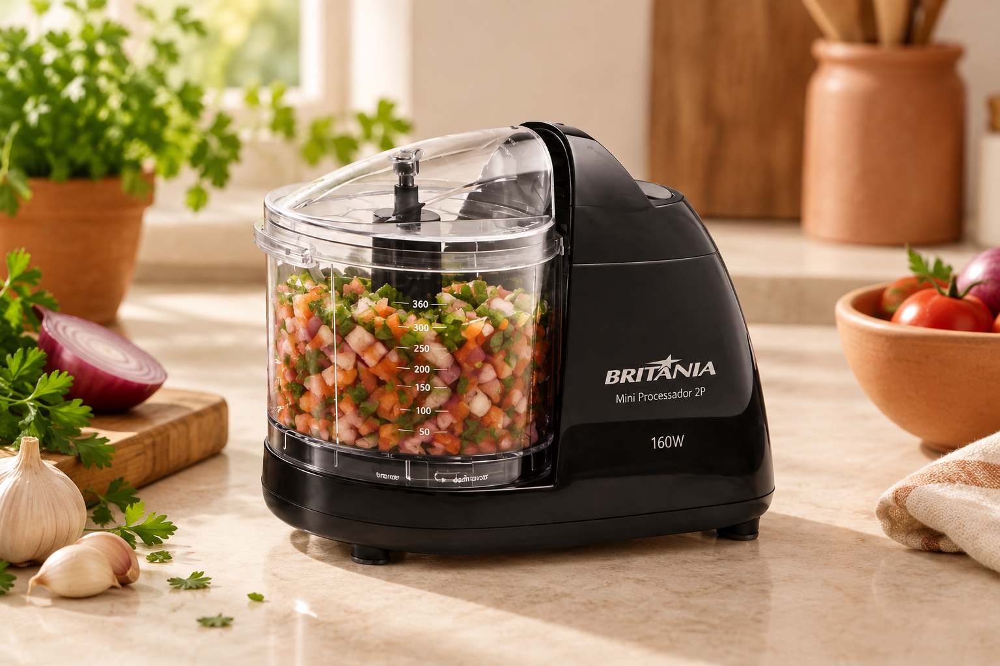

Uma identidade acolhedora e uma oferta clara para o Mini Processador Britânia 2P
Guia de elementos visuais, sem pagamento

Creme#F7F1E8
Terracota#C65D3A
Ação#A74429
Texto#2A211D
Bege#E6D3C1




Imagens geradas a partir da referência fornecida. Conferir detalhes do produto antes de publicar
História cotidiana, demonstração, detalhes, oferta e dúvidas. No celular, compra sempre acessível e fotos com o produto inteiro
Abrir prompt para o Claude